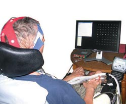

BCI는 뇌와 기계를 직접 연결해서 컴퓨터나 기계를 직접 조작하는 인터페이스 시스템을 말한다. 여러 명칭이 있지만 보통 BCI로 통용된다. 크게 삽입형 BCI, 부분적 삽입형 BCI, 비삽입형 BCI로 나눌 수 있다.
공각기동대의 영향을 받은 몇몇 SF 작품에서는 전뇌라고 부르기도 하지만 공식적인 명칭이 아니다. 위 분야는 넓게 HCI 기술에 속한다. 인간의 두뇌와 기계를 연결시키는 기술이기 때문에 컴퓨터공학이나 로봇공학 이외에도 신경과학 및 의학과 깊게 연결되어 있는 기술이다.